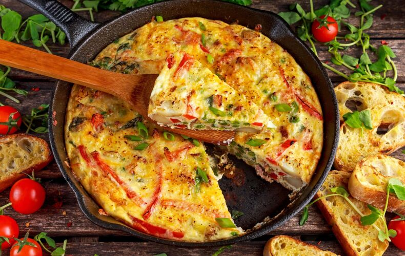

Frittata's Recipe

Description
The frittata is a classic dish, perhaps one of the first with which we experiment in the kitchen. You can indulge yourself with versions rich in fresh ingredients
that are perfect for the spring season such as spring, radish, or asparagus frittata. In winter, you can try your hand at the red beet frittata.
Ingredients
- 8 Eggs - medium
- 0.1 lb (50 g) Pecorino cheese - to be grated
- 0.1 lb (50 g) Parmigiano Reggiano DOP cheese - to be grated
- Fine salt to taste
- Black pepper to taste
- 1 tsp (5 g) Extra virgin olive oil - to grease the pan
Steps
- To prepare the frittata, crack the eggs and place them in a large bow, then beat them lightly with a fork (or whisk)
- Pour in the grated Parmesan and Pecorino chees, then add salt and pepper to taste.
- Place a 12-inch (30 cm) non-stick pan over the heat and heat the oil for a few moments
- Add the beaten eggs and let them cook over low heat for 8 minutes, covering the pan with a flat lid; move the pan occasionally to keep the frittata from sticking to the bottom.
- Once the required time has elapsed, flip the frittata: place the serving plate on the pan and turn it upside down, keeping the plate and pan tightly together so that the
frittata does not slip out
- now you will find yourself with the cooked part of the frittata facing upwards, so slide the frittata inside the pan, so that the other side can cook for another 8 minutes,
this time without the lid.
- Once ready, serve the frittata hot